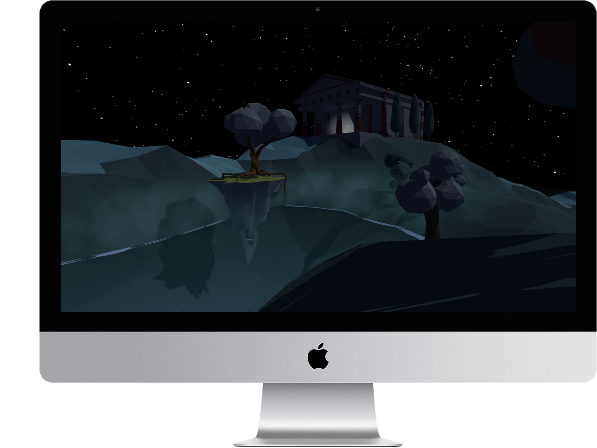

Im Mittelpunkt steht unser 5-Gang Cocktail-Tastingmenü – derzeit eine Reise durch die vier Jahreszeiten in einem Abend. Jeder Gang bringt eine eigene saisonale Facette zum Ausdruck. Daneben lädt eine Auswahl eigenständiger Cocktails dazu ein, den Abend ganz nach persönlichem Geschmack zu gestalten.
der Frühling
Floral, Frisch, Leicht
der Sommer
Früchtig, Kühl, Spritzig
das Abendrot - Zwischenspiel
Amuse-Bouche
der Herbst
Würzig, Herb, Warm
der Winter
Cremi, Süß, Verwöhnend
 Klavier
Klavier
I am also a designer. I trained and worked as a UX designer. Some examples of my previous design work can be found below. Nowadays research is my main focus, and I sometimes do design for fun and aesthetics (like this website).
Mend Mend is a desktop-mobile app that provides daily logs for the patient to record their mood, diary, and a variety of assessment instruments to share with their therapist, so that the therapist can provide a more tailored treatment.

Death and the Maiden A game I made in Unity inspired by Schubert's String Quartet no.14, whose second movement quotes a theme from his lied "Der Tod und das Mädchen". Death and the Maiden is a Renaissance motif prominent in Germanic countries. This game tells the story of a woman's death and her adventure in the underworld.

Google Design Challenge Prompt: While there are many ways to rate and review restaurants, they are not focused on evaluating individual servers. Design an experience where diners can submit positive comments and constructive suggestions for the wait staff, and servers can use this feedback to both improve and help to secure new employment.

TP-Link Kasa Kasa is TP-Link's smart-home control center. The "rules" function I designed will help users automate their daily routines with their smarthome devices.

Mira Mira is a smart mirror that keeps track of your skin condition and provides you with personalized feedback for your skincare.
UI Design This is a collection of UI and graphic designs that I have created for fun and practice.
Abende
Enjoy events ().
- Agitata da due Venti (Griselda); Antonio Vivaldi
- Come Nave in Mezzo all'Onde (Carlo il Calvo); Nicola Porpora
- Symphony no. 9, Op. 125; Ludwig van Beethoven
- String Quartet no. 14, D. 810; Franz Schubert
- Piano Sonata no. 21, D. 960; Franz Schubert
- Trio Sonata in E minor, Bwv. 529; J. S. Bach